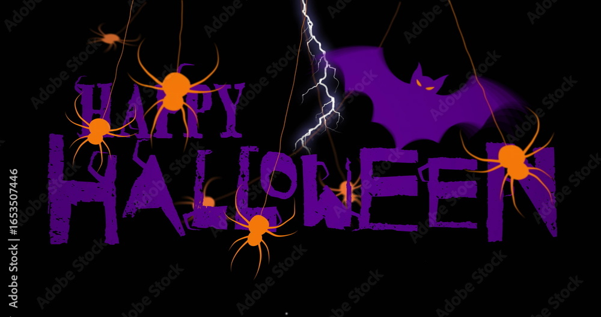

Introduction | The Boy Named Márk | The Candle Goes Out |
The Ghost Appears | The Lesson
In the quiet village of Pécsvárad, nestled among the misty hills of Hungary, the locals believed that on All Souls’ Night, the veil between the living and the dead grew thin enough for whispers to drift from the graves. Every year, families visited the cemetery with candles and chrysanthemums, lighting the way for their departed loved ones. By midnight, the graveyard shimmered like a sea of stars — every flame a message of remembrance.
But one year, a boy named Márk decided to test the old stories. He was twelve, curious, and too brave for his own good. His grandmother had told him, “Never let a candle go out before dawn — the soul it guides may lose its way.” Márk only laughed. “Ghosts don’t need candles,” he said, stuffing his hands into his coat pockets.
That night, after everyone had gone home, Márk slipped back through the iron gates of the cemetery with his flashlight. The fog had thickened, and the air felt heavy, almost watching him. He walked among the graves, their candles flickering weakly in the damp wind. One by one, the flames trembled and died. Márk knelt beside the last candle — a small, trembling light beside an old headstone marked Ilona Kovács, 1843–1892.
“Let’s see what happens when this one goes out,” he whispered, blowing gently.
The flame vanished.
For a moment, nothing happened. Then, from the dark earth below, came a soft tapping. Márk froze. The tapping grew louder, rhythmic, like fingernails against wood. His flashlight flickered, then died. In the dim moonlight, he saw a pale hand press against the soil, then another. The ground shifted, and a voice, soft but cold, whispered his name.
“Márk… why did you blow out my light?”
He stumbled back, tripping over a gravestone, heart pounding. The figure rose slowly — not monstrous, but sorrowful — an old woman draped in shadows, her eyes glowing faintly like candle flames. She held out her hand.
“I was lost in the fog,” she said. “Now you must guide me home.”
Márk scrambled to his feet, pulled out a match from his coat, and lit the candle again with shaking hands. As the flame bloomed, the woman smiled faintly and began to fade, her voice echoing through the mist.
“Remember, child — never let the light die. The living guide the dead… and the dead watch over the living.”
By dawn, the villagers found Márk asleep at the cemetery gate, his face pale but peaceful. The candle beside him still burned brightly, untouched by the wind. From that day on, Márk never missed a Halottak Napja — and he always lit one extra candle.
For the one he’d blown out.
🎃Story created by AI🎃